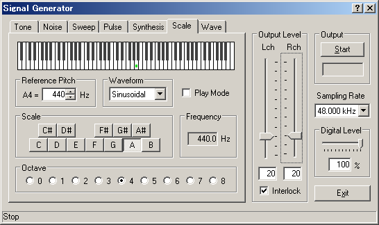
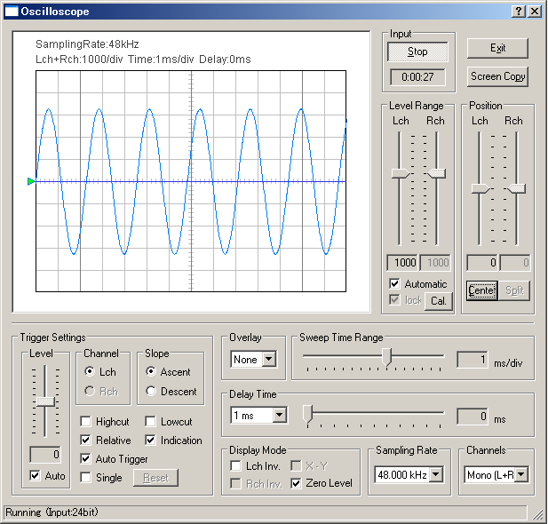

DSSF3 > RA > Reference Manual > Signal Generator

| Item | Description |
|---|---|
| Reference Pitch | Enter the frequency of A4. Default value is 440 Hz. |
| Waveform | Select the waveform of output sound. |
| Play Mode | Check here to play sound when clicking on the keyboard. |
| Scale | Specify the scale of note. |
| Frequency | Frequency of the selected scale is shown here. |
| Octave | Specify the octave of note. |

DSSF3 > RA > Reference Manual > Signal Generator